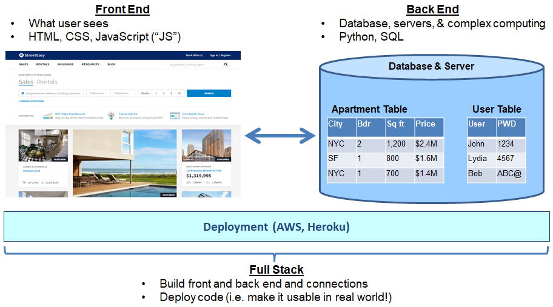
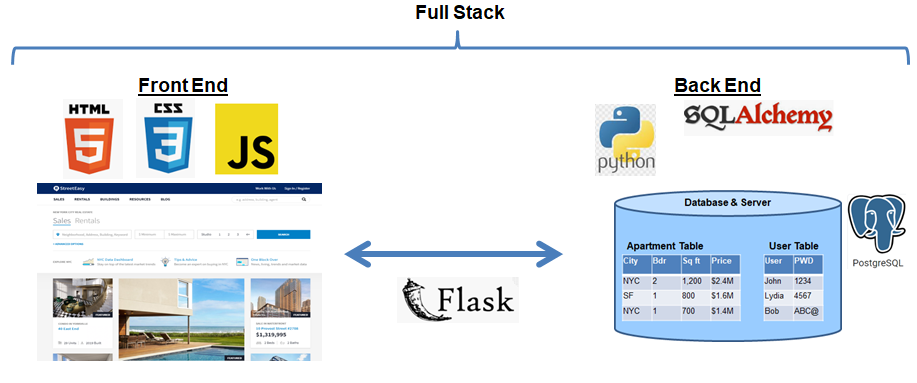

{{> navbar}}

<main id="main">
  <div class="container-fluid">
    <div class="row">

      <!-- .sidebar -->
      <nav id="sidebarMenu" class="col-md-3 col-lg-2 d-md-block bg-light sidebar">
        <div class="sidebar-sticky">{{> coding101-class-accord}}
      </nav>
      <!-- /.sidebar -->


      <!-- .main -->
      <section class="col-md-9 ml-sm-auto col-lg-10 main">
        {{> nav-tabs}}

        <!-- .tab-content -->
        <div class="tab-content mx-2 mx-md-4 my-2 my-md-3" id="mainTabContent">
          <!-- #classes -->
          <div class="tab-pane fade active show" id="classes" role="tabpanel" aria-labelledby="classes-tab">
            <nav aria-label="breadcrumb">
              <ol class="breadcrumb">
                <li class="breadcrumb-item"><a href="#">Courses</a></li>
                <li class="breadcrumb-item"><a href="#">Coding 101</a></li>
                <li class="breadcrumb-item active" aria-current="page">Classes - Lesson 0 </li>
              </ol>
            </nav>
            <!------------------------------------------------------------------------------------- -->
            <!-------------------------------  Coding 101.0 - Intro                                 -->
            <!------------------------------------------------------------------------------------- -->
            <!-- #region -->
            <p id="coding101-0"></p>
            <article class="section">
              <header class="section__header">
                <h2>Coding 101: Introduction!! </h2>
              </header>
              <!-- #coding101-0.0 -->
              <section class="section__subsection subsection" id="coding101-0.0">
                <header class="subsection__header">
                  <h3>Get ready to learn!</h3>
                </header>
                <h4>An online first education platform that…</h4>
                <ul>
                  <li>Provides modular, adaptive, self-paced course curriculum with dynamic content based on
                    individual students using it and their individual learning style and experience level</li>
                  <li>Structures courses within departments to allow you to earn a major or minor in a particular
                    field of study (e.g., Coding), or take electives in classes that interest you (e.g., Chinese
                    History)</li>
                  <li>Gives you the option to take courses pass / fail, for a grade, or to audit them</li>
                  <li>Offers a wide range of course curriculum across coding, business, accounting, science, math,
                    etc.</li>
                </ul>
                <h5>Mission: Provide global education for free to everyone and anyone!</h5>
                <hr>
                <h4>Uprise University – Coding Major Principles</h4>
                <ul>
                  <li><strong>Build real stuff! </strong>Most courses teach you fundamentals while you build in
                    sandboxes (i.e. something that is not actually useful); We prefer to building things that are
                    useful!</li>
                  <li><strong>Self-paced. </strong>Fast or slow, your choice. As you move from section to section, you
                    will work with different students and different teacher assistants who are experts in that module.
                  </li>
                  <li><strong>Modular! </strong>We assume you know almost nothing, but if you do, don’t worry…this
                    course, it is set up to be modular, meaning that you can quickly skip through parts you already
                    know; Tests at end of each section check to make sure you really know it; Cheat sheets also allow
                    you to scan material quickly</li>
                  <li><strong>Mentors to help debug! </strong>One of the most difficult and frustrating parts about
                    learning to program is not learning the concepts, but trying to figure out why your program
                    doesn’t work. Our teachers will be here to help. Don’t spend hours looking for a missing
                    semi-colon.</li>
                  <li><strong>Learn, Do, Teach.</strong> In order to really learn coding and coding principles well,
                    you should first</li>
                  <ul>
                    <li>Learn concepts</li>
                    <li>Then actually code real projects and do it yourself</li>
                    <li>Finally teach it to your classmates. This will make sure you learn it, understand it, and
                      remember it!</li>
                  </ul>
                  <li><strong>Great coders are great collaborators.</strong>It can take hours, days, or even weeks to
                    fix a bug that someone else could have solved in minutes. Collaborative community makes everyone
                    better.</li>
                </ul>
                <hr>
                <h4>Who should major in coding? Anyone who wants to do all or some of below…</h4>
                <ul>
                  <li>Learn how to code</li>
                  <li>Learn how to build and deploy real world applications (not just concepts and theory)</li>
                  <li>Major in computer science</li>
                  <li>Get a job as a software engineer</li>
                  <li>Manage a team of software engineers or learn how to communicate with them better</li>
                  <li>Pick up a new hobby</li>
                  <li>Become a tech billionaire!</li>
                </ul>
                <hr>
                <h4>Coding Major - Program Overview</h4>
                <p>What’s included:</p>
                <ul>
                  <li><strong>Free (donations encouraged): </strong>Slides and course lessons, cheat sheets, source
                    code</li>
                  <li><strong>Paid: </strong>1x1 mentors or group classes, project submission review, and graduation
                    certificates</li>
                </ul>
                <p>Pre-requisites</p>
                <ul>
                  <li>Good understanding of math and algebra</li>
                  <li>Working laptop with internet</li>
                  <li>No prior programming experience required</li>
                </ul>
                <p>Mentors are software engineers and developers from large corporations</p>
                
                <hr>
                <h4>Coding Major Curriculum</h4>
                <h5>100 level classes give you coding fundamentals to build and deploy applications; Finish these
                  first</h5>
                <p><strong> 100+ Level Classess (required classes):</strong></p>
                <ul>
                  <li>101: Front End Web Development (HTML, CSS, JS)</li>
                  <li>102: Back End Web Development (Python)</li>
                  <li>103: Intro to database management and analysis (SQL)</li>
                  <li>104: Full Stack Web Development (Flask-SQLAlchemy)</li>
                  <li>105: Deployment and Tools (Heroku, AWS, GitHub, Command Line Interface)</li>
                  <li>106: Interview prep and Basic Algorithms (Python)</li>
                </ul>
                <p><strong>200+ Level Classses</strong></p>
                <ul>
                  <li>201: Mobile App Development</li>
                  <li>202: Intro to Machine Learning</li>
                  <li>203: Intro to Artificial Intelligence </li>
                  <li>204: Intro to C++</li>
                  <li>205: Intro to React</li>
                  <li>206: Data and statistical analytics</li>
                  <li>207: Financial analytics with python</li>
                  <li>208: Intermediate Algorithms</li>
                </ul>
                <p><strong>300+ Level Classses</strong></p>
                <ul>
                  <li>301: AWS Cloud Architect </li>
                  <li>302: Intermediate Machine Learning</li>
                  <li>303: Intermediate Artificial Intelligence</li>
                  <li>304: Block Chain</li>
                  <li>305: Security management</li>
                  <li>306: Advanced Algorithms</li>
                </ul>
                <hr>
                <h4>Coding 100 Level Courses: Full Stack Web Development & Deployment</h4>
                <h5>What is full stack web development?</h5>
                <p><strong>Full Stack web development </strong>refers to developing front end code to deliver what you
                  see on webpage, back end code to handle data and complex computing, and connecting and deploying
                  both; Full stack web developers can create and deploy everything needed to make useful apps</p>
                <p><strong>Front End Code</strong>creates what you see when you view a website (e.g., text,
                  pictures,…)</p>
                <ul>
                  <li><strong>HTML</strong> gives website basic skeletal structure, written text, pictures, and links
                    (like your bones)</li>
                  <li><strong>CSS </strong> makes site look good through formatting (like your skin and make-up)</li>
                  <li><strong>JavaScript </strong> provides site with functionality (like your muscles) and basic
                    computation ability</li>
                </ul>
                <p><strong>Back End Code</strong>connects site and user input with a server and database so that you
                  can store data, create user accounts with login’s,…</p>
                <ul>
                  <li><strong>Python </strong> is similar to JavaScript but sits on site’s server and is used for
                    accessing and updating data and typically performs more complex functions (like your brain)</li>
                  <ul>
                    <li><strong>Flask, SQL-Alchemy, psycopg2 </strong> are all free libraries written in python that
                      we will use to more easily create connections to our database</li>
                  </ul>
                  <li><strong>SQL</strong>is a very simply language used strictly for interacting and querying
                    databases</li>
                </ul>
                <p><strong>Useful tools and deployment:</strong></p>
                <ul>
                  <li><strong>GitHub </strong> is online platform where you can save and share work and version
                    control</li>
                  <li><strong>PostgreSQL </strong> is simple but high powered database that allows you to store data
                  </li>
                  <li><strong>AWS </strong> is Amazon’s industrial strength platform that can host your site and
                    database</li>
                  <li><strong>Heroku </strong> is an application that makes it even easier to deploy code on AWS</li>
                </ul>
                <p>Coding languages not covered in 100 levels classes:</p>
                <ul>
                  <li>Apps: Xcode, React</li>
                  <li>Native desktop programs: Java, C++</li>
                </ul>
                <hr>
                <h5>What is full stack web development? It let’s you build and deploy websites!!</h5>
                
                <hr>
                <h5>101: Front end web development overview</h5>
                
                <hr>
                <h5>102: Back End Web Development (Python)</h5>
                
                <hr>
                <h5>103: Intro to database management and analysis (SQL)</h5>
                
                <hr>
                <h5>104: Full Stack Web Development to tie together front and back end (Flask-SQLAlchemy)</h5>
                
                <hr>
                <h5>105: Deployment and Tools (Heroku, AWS, GitHub, Command Line Interface)</h5>
                
                <hr>
                <h5>Learning Summary</h5>
                
                <hr>
                <h5>What you will build?</h5>
                
                <hr>
                <h5>Instructions</h5>
                <p><strong>To start, </strong>flip through all lessons, slides, cheat sheet, and deployed course
                  projects quickly to get a feel for what you will be working on</p>
                <p><strong>Every few days</strong></p>
                <ul>
                  <li>Flip back through past few lessons to refresh your memory on what you have already learned</li>
                  <li>Try to learn at least one new thing to make sure that you continue to learn</li>
                  <li>Make flash cards to remember key commands and syntax</li>
                </ul>
                <p><strong>Once per month</strong></p>
                <ul>
                  <li>Flip back through all of materials that you have covered to make sure that you don’t forget
                    anything</li>
                  <li>Flip through all materials you haven’t yet covered to see where you are in relation to entire
                    course</li>
                </ul>
                <p><strong>After you finish,</strong>make sure to go back through all materials and projects once per
                  month to make sure that you don’t forget what you have learned</p>

              </section>
            </article>
            <!--------------------------------- /Coding 101.0 - Intro             ---------------- -->
            <!-- endregion -->

      </article>
      <!-- /Intro -->

    </div>
    <!-- /#classes -->

  </div>
  <!-- /.tab-content -->

  </section>
  <!-- /.main -->

  </div>
  </div>
</main>
